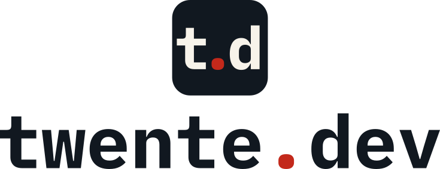

twente.dev
The system is called the shared thread: independent communities, companies
and practitioners in one region, connected by a single visible thread. The thread's knot is
the red dot — the same dot that turns twente into a domain.
The full specification, with construction tables and rationale, is in README.md. Templates: slides · letterhead · e-mail signature.
1 · The mark
t.d — the domain in three glyphs: the wordmark's own t, full stop and d (IBM Plex Mono Bold, outlined), kerned tight on the ink badge, the stop in flag red. Ratified 2026-08-30, superseding the constructed-t badge of 2026-08-11. On a canvas of 160 the badge radius stays 30; letters sit at 0.8 × the wordmark's 64-unit x-height, with outline gaps of 9.6 and the baseline at y 116. Use the flip button to check every variant on both grounds.
The badge is part of the mark — the letters never appear loose on a page. Where a badge
cannot fit, use the wordmark. The single-colour path is one fill-rule="evenodd"
path with the letters and the stop as holes (the d's counter stays solid, as a knockout
should): stamps, engraving, embossing, laser cutting.
2 · Colour
Four brand colours, two derived cuts. Signal Red is RGB 195 41 27 — the Twente flag's actual red, adopted 2026-08-11 — and it is text-safe on Warm Paper, so the graphic red and the interactive red are one colour in light mode.
Measured contrast (WCAG 2.1)
| on Paper | on Ink | |
|---|---|---|
| Ink / Paper | 16.13:1 · AAA | 16.13:1 · AAA |
| Signal Red | 5.19:1 · AA text | 3.11:1 · graphic only |
| Red Light | — (use Signal Red) | 5.41:1 · AA text |
| Red Dark | 6.71:1 · AA text | — |
| White on Red fill | 5.75:1 · AA — buttons stay flag red on both grounds | |
| Thread Grey | 1.22:1 · hairlines only | 13.22:1 |
Signal Red is not a text colour on ink — use Red Light there. Fills
(buttons, dots, edges) stay the true flag red on every ground. The website's
src/styles/tokens.css encodes this switch and is authoritative.
3 · Typography
IBM Plex Mono is the voice of the wordmark and the technical texture — labels, dates, indices, set small, uppercase, +8 % tracking. Inter carries everything else. Both SIL OFL 1.1.
Rebuilding the network.
Talks, field notes and open calls
A practitioner-led tech community for Twente — events, jobs and field notes, from Enschede to Almelo. Independent and tracking-free.
twente.dev/001 · 7 oct 2026 · enschede · register
twente.dev is always lowercase — at the start of a sentence,
in display names, on a title slide. The wordmark is IBM Plex Mono Bold with the full stop in
Signal Red, and it ships as outlines in wordmark.svg: never re-set it in a live
font.
4 · Lockups

lockup-stacked.svg — square spaces
Derived, not eyeballed: wordmark x-height = 64 against the 160 badge (40 %), band
centred on the badge; every gap is one bar width (30). Clear space: one bar width around
everything. Minimums: mark 24 px (below that, the favicon), horizontal lockup
200 px, stacked 140 px, wordmark 120 px. White variants
(-white.svg) exist for ink and photographic grounds — flip the ground above to
test.
5 · What not to do
- Use red as decoration. One red signal per surface is the norm — the site header carries exactly one.
- Recolour or move the dot, in the mark or the wordmark. The dot is the brand.
- Take the letters off the badge, re-kern them, or swap in a live font.
- Re-set the wordmark in another font, weight, or uppercase.
- Set Signal Red text on ink (3.11:1) — Red Light is for that.
- Set text in Thread Grey — it is a hairline colour (1.22:1).
- Gradients, shadows, outlines, rotation: none of them, ever.